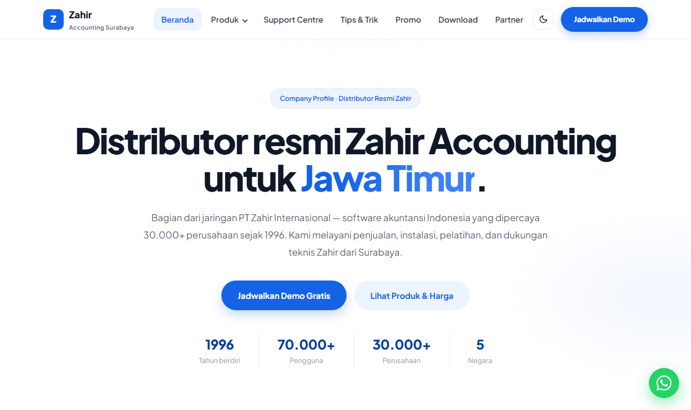
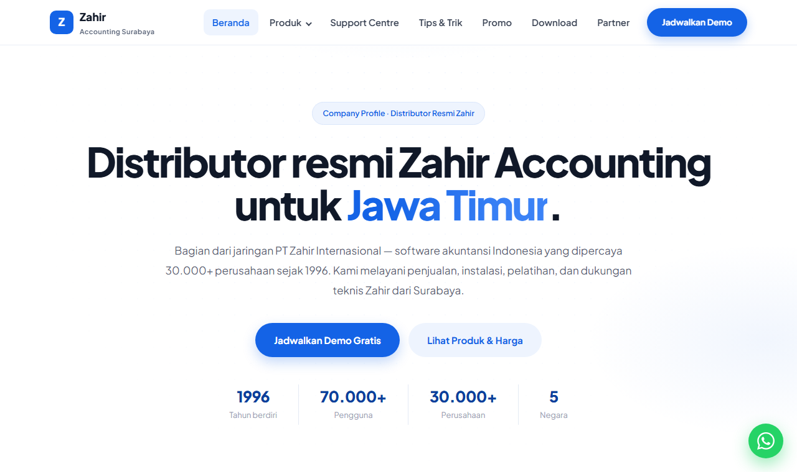
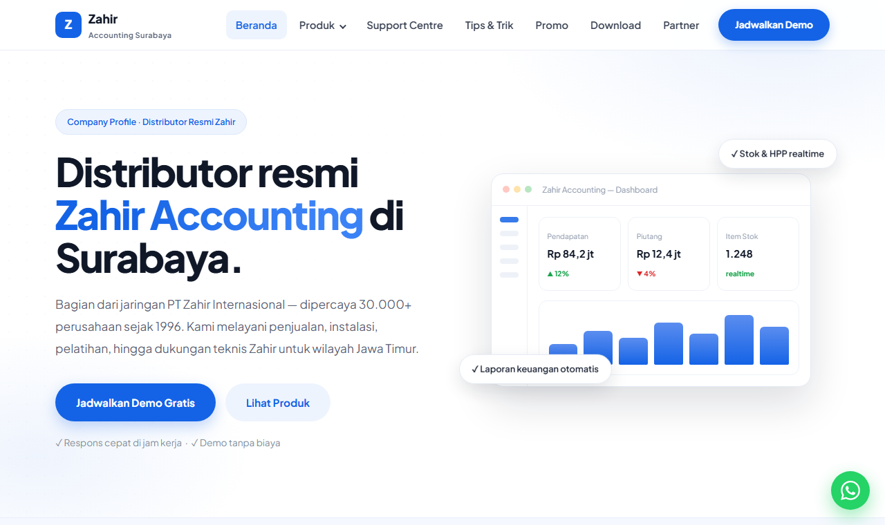
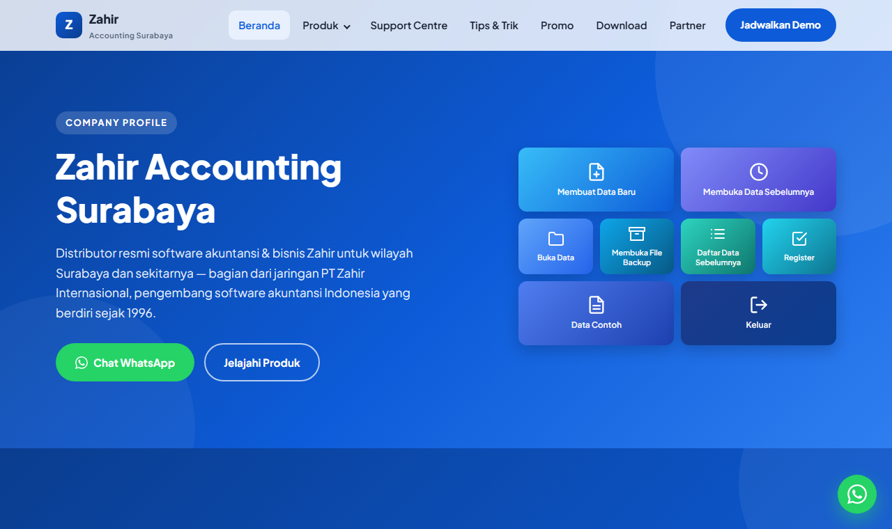

Setiap versi punya karakter desainnya sendiri. Pilih salah satu untuk dibuka — tema gelap/terang tetap berfungsi di semua versi.

TERBARU · V1.3Hero terpusat dengan dashboard Zahir asli, marquee pelanggan, timeline horizontal, bento layanan, strip produk. Dark mode tersedia dan seluruh halaman situs sudah konsisten bergaya ini.
Buka beranda terkini
V1.2Snapshot ketika mockup CSS diganti gambar dashboard Zahir asli (Laba Rugi Agustus 2026). Tampilan teks terpusat dengan dot-grid halus.
Buka V1.2
V1.1Hero split kiri-kanan dengan mockup dashboard CSS, statistik strip biru, dan grid kartu putih ber-border. Versi pertama gaya clean modern.
Buka V1.1
V1.0Beranda marketing pertama dengan tile menu ala Zahir Accounting, seksi keunggulan, statistik, dan segmen industri.
Buka V1.0Produk & harga, Support Centre, Download, hingga kontak — semuanya bergaya konsisten dengan beranda terkini.